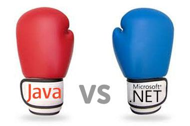

El Java de hoy es la *lingua franca* del ámbito de la programación: como lenguaje, es más fácil de aprender que C/C++, más normal de leer que Perl/Lisp, y más profesional de usar que VB/PHP. Casi nadie hay que no entienda Java, así que para explicar un concepto, escribiéndolo en Java todos lo entienden.
Y Java como plataforma tiene una biblioteca de clases que lo abarca todo, una máquina virtual extremadamente optimizada y proyectos de código abierto profundamente arraigados. El resultado es que, hagas lo que hagas, en teoría, e incluso en el 99% de la práctica, se puede implementar con Java.
En el mismo instante en que escribo estas palabras, decenas de miles de líneas de código Java acaban de nacer en el mundo. Así que si tomamos "que ya nadie lo use" como el límite de la muerte de una tecnología, Java evidentemente está vivo, y bastante bien; si tomamos "poder encontrar trabajo" como el límite, Java está más vivo que nunca. No sé cómo está la situación en China, pero en cualquier sitio de empleo de Europa o América, si buscas "Java" como palabra clave, es fácil ver su posición dominante, dando puñetazos a C++ y patadas a PHP.
Nadie cuestiona por qué vive; lo damos por sentado (take for granted) que vive, igual que yo nunca cuestiono si mañana tendré trabajo cuando vaya a la oficina, granted.
Pero si es así, más valdría decir que Java ha obtenido la vida eterna. Porque si repasas el índice TIOBE según esas dos definiciones, te darás cuenta de que ningún lenguaje de programación (ni la tecnología que hay detrás) con un mínimo de renombre ha muerto de verdad. Visual Basic sigue vivo, Delphi sigue vivo, COBOL vivo, Fortran vivo, e incluso FoxPro sigue vivo.
En cuanto a ejemplos aún más de nicho, ¿habéis oído hablar del sistema IBM AS/400? Mi anterior empresa todavía lo usa; el programador que lo mantiene tiene un salario inicial asombrosamente alto, porque toda la lógica de negocio central de la empresa durante veinte años está ahí, y si se cae, todo se cae. El AS/400 también sigue vivo.
Entonces, cuando digo "que Java muera / Java ha muerto", ¿qué significa "morir"? Muy sencillo: que ya nadie lo ama.
La respuesta en este mismo hilo que reescribe el poema de Niemöller es un eco perfecto de la frase de Paul Graham: "de todos los grandes programadores que puedo imaginar, solo conozco a uno que programaría en Java voluntariamente". Nueve de cada diez personas que escriben Java lo hacen "porque el trabajo lo requiere" — la restante es porque no sabe hacer otra cosa. Entre todos los motivos que puedo imaginar para escribir programas, "porque el trabajo lo requiere" es el que más desalienta.
Sacrificando la salud de la próstata y la columna vertebral, sentado durante horas frente a la pantalla aguantando escribir programas en Java solo para ganarme el pan; en fin, a mí no me parece divertido. Si todavía puedes reírte, good for you.
Y mientras no acabes de llegar en una máquina del tiempo desde 1995, deberías poder ver que el Java actual tampoco es realmente adorable.
En cuanto a las características del lenguaje, más que decir que no tiene grandes problemas, mejor decir que sus problemas ya tienen muchos workarounds maduros, como los métodos estáticos que no se pueden override, las checked exceptions superfluas y los genéricos a medias. Lo que realmente molesta son las características que le faltan: puedo decir que struct, delegate, async/await, event handler, accessor, soporte de operator overloading (bueno, esto no siempre es bueno) e incluso type inference en C# son cosas que a Java le faltan (o solo se pueden lograr con librerías de terceros que no llegan a la médula), y por supuesto los genéricos de runtime de verdad. Si miras cada punto por separado, parecen poca cosa, pero cuando se acumulan todos, C# es mucho más entrañable que Java.
Algún día, quizás, esas funciones acaben apareciendo en Java, igual que Java 7 al fin tuvo switch sobre strings y try-with-resources, y Java 8 al fin tuvo lambdas. Pero hasta que aparezcan, hay que aguantar, junto con todo el laberinto tecnológico de Java EE, hinchado, complejo y farragoso. Y gracias a Oracle, no sabes cuánto tendrás que aguantar. Como referencia, Java 8 equivale más o menos a .NET Framework 3.0, y .NET Framework 3.0 es cosa de 2006, cuando el líder del mercado de teléfonos móviles era Nokia.
Oracle, según cualquier criterio, no es una empresa que piense en los desarrolladores a la hora de mejorar sus herramientas; es más detestable para los desarrolladores que Microsoft. Esta última al menos tiene la bien organizada y detallada documentación de MSDN, la plataforma de código abierto CodePlex, mediocre pero en mejora continua, y además un tipo gordo y calvo, con la camisa empapada de sudor, que gritó desde el estrado: "developers, developers, developers".
¿Y qué ha hecho Oracle? Dejar a MySQL en la cuneta para que lo devoren los perros. Echar de casa a la comunidad de desarrollo de OpenOffice. Demandar a Android de manera absurda.
Por eso, que James Gosling renunciara justo cuando Oracle adquirió Sun Microsystems se llama previsión.
No es de extrañar que todos compitan por inventar nuevos lenguajes sobre la JVM y porten otros lenguajes a la JVM; solo que estos intentos se dispersan en demasiadas direcciones, y ninguno ha logrado unificar el panorama para dar esperanza a la comunidad Java.
Nuestra situación actual es que, desde 2007, ya nadie escribe Java ME; en Java SE, aparte de unos pocos proyectos de IDE, el programa más famoso es Minecraft; Java EE y Android son las dos únicas partes de Java que todavía están, por así decirlo, alive and kicking. Dalvik es otra historia, no hay mucho que decir. Entonces, la JVM en sistemas *nix es, en realidad, el único pilar que le queda a Java como plataforma. Antes nunca tuvo un competidor de verdad — o demasiado inmaduro, o demasiado insustancial — y así fue hasta el 12 de noviembre de 2014.
Y esta es la respuesta a tu pregunta: Microsoft, cuyo presidente afirmó hace más de una década que "Linux es un cáncer", a partir de hoy apoya oficialmente que su plataforma de difusión de valores fundamentales se ejecute en Linux, y además es de código abierto y gratuita.
Todos los proveedores del mundo capaces de venderte un hosting virtual con Linux se convirtieron de la noche a la mañana en proveedores de hosting .NET. Quienes no aman Java de repente tienen una nueva opción: documentación detallada, buen soporte, hoja de ruta clara, comunidad potente, herramientas fáciles de usar, fiabilidad de nivel empresarial y, lo mejor de todo, el 90% de la experiencia previa escribiendo Java se puede trasladar sin fricciones.
Nunca he dicho que esto dé resultados de inmediato, pero pensar que Java, que una vez fue algo tan omnipresente — incluso corría dentro de tu tarjeta SIM, hasta hoy — quizá pueda convertirse, en el transcurso de mi vida, en el COBOL de 1973, me hace sentir lo impredecible de las cosas. Creo que los sistemas Java existentes se convertirán poco a poco en código heredado (legacy code), y la gente seguirá manteniéndolos solo porque deben seguir manteniéndolos.
Surgirán nuevos forcejeos; después de todo, un camello famélico sigue siendo más grande que un caballo: un grupo de ratas puede roer el cadáver del camello durante un buen tiempo. Para aliviar el dolor que tu frágil alma pudo sufrir al leer la frase anterior, reconozco que yo tampoco soy más que una pulga sobre las ratas que roen a Java (¿eh? ¿en realidad no sufres? Mira, incluso tú no amas a Java). Sin duda será un proceso largo, así que si eres un programador Java recién incorporado, no te preocupes por tu desarrollo profesional: mientras la humanidad no invente la inmortalidad, no vivirás lo suficiente para ver el día en que no encuentres trabajo por saber solo Java.
Y aunque sea un caso extremo, si de verdad eres capaz de llevarte a ese callejón sin salida, más te vale pasarte a la gestión cuanto antes.
Por último, no estoy "gritando" que Java se muera, porque esto no es una proclamación ni mucho menos una maldición; simplemente es exponer una conclusión tras observar la situación actual. Claro, "muérete" es difícil de interpretar sin connotaciones emocionales, igual que cuando escribo "kill -9" es difícil que no se piense que odio ese proceso. Aunque en realidad no lo odio. Y si lo odio, es solo por un instante.
Además, esa idea de que "los grandes maestros solo eligen la herramienta más adecuada para resolver el problema, sin discutir cuál es mejor o peor" — la primera mitad es cierta; la segunda es un completo mito. No todo el mundo es pragmatista; hay muchísimos grandes maestros que discuten sobre las herramientas. Quien dice eso ha leído demasiado poco.
Declaración de intereses y descargo de responsabilidad：
Actualmente soy un programador Java. Para ser precisos, en mi tiempo de trabajo en la empresa, si escribo código, el sesenta por ciento es Java, incluyendo EJB, JPA, JSF, Swing e incluso GWT. Y la última vez que escribí en serio más de diez líneas de C# fue hace ocho años. Empecé a escribir esta respuesta porque estaba aburrido esperando el avión; no esperaba que se hiciera tan larga. No intento convencer a nadie, así que si no estás de acuerdo, up to you.
Fuente: Zhihu
Haz clic para compartir mis notas
<p style="font-size:14px;">¡Las notas deben ser una extensión del contenido de este artículo!</p><br> <p style="font-size:12px;"><a href="../tougao.html" target="_blank">Envío de artículos, haz clic aquí</a></p> <p style="font-size:14px;"><a href="./runoob-user-test-intro.html" target="_blank">Método para obtener el código de invitación de registro</a></p> <h3 class="text-muted"><i class="fa fa-info-circle" aria-hidden="true"></i> ¡Debes <a href=".." class="runoob-pop">iniciar sesión</a> antes de compartir notas!</h3> <p><a href="./runoob-user-test-intro.html" target="_blank">Método para obtener el código de invitación de registro</a></p>